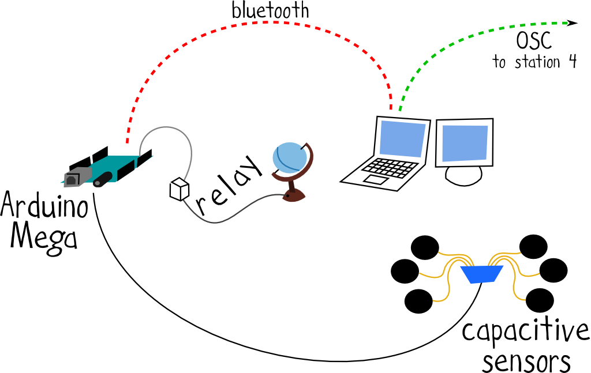

Stazione 2

Con la stazione 2 sperimentiamo con altre possibili interazioni, tutte gestite da una scheda Arduino Mega:
- Alcuni elettrodi fungono da sensori capacitivi, ognuno dei quali associato con un diverso comportamento. Alcuni causano l’invio di messaggi ad uno sketch di Processing in esecuzione su di un computer che comunica con Arduino tramite protocollo seriale via Bluetooth. Il tocco sugli elettrodi causa la generazione di una figura colorata a schermo.
- Altri elettrodi invece provocano l’invio di messaggi OSC ad un altro ocomputer. Quest’ultimo è connesso alla stessa rete locale rispetto a quelo che comunica serialmente con Arduino, e si occupa di interpretare i messaggi OSC in ingresso come suoni generati in tempo reale da alcuni sintetizzatori programmati con SuperCollider.
- Infine un ultimo elettrodo provoca l’accensione di una lampadina, connessa ad Arduino grazie ad un modulo relay.
Software
Hardware